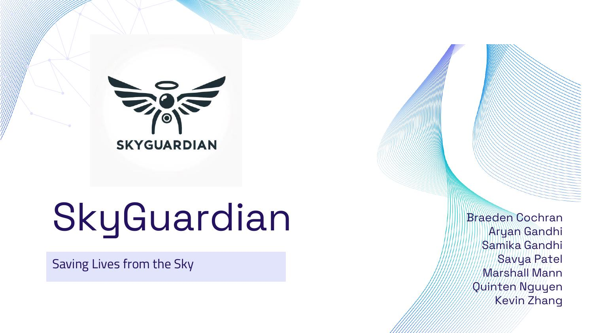
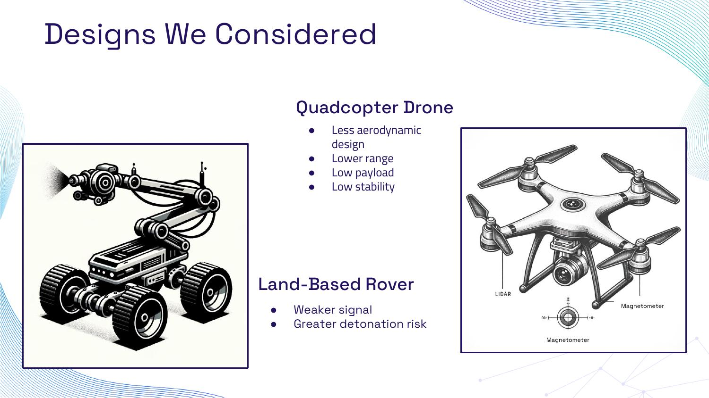
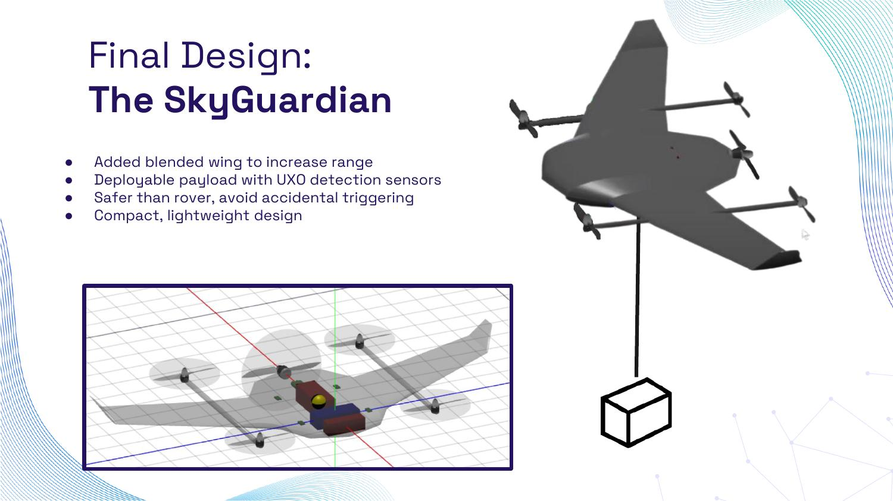
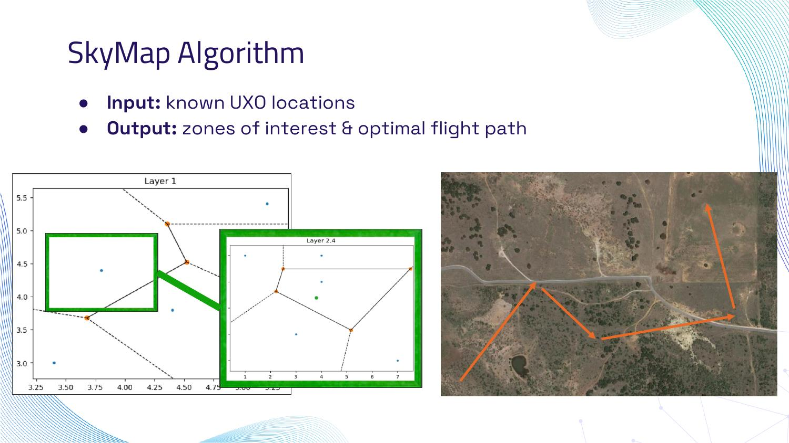
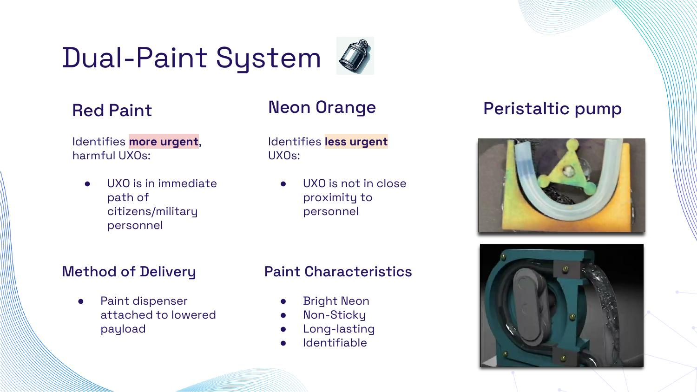
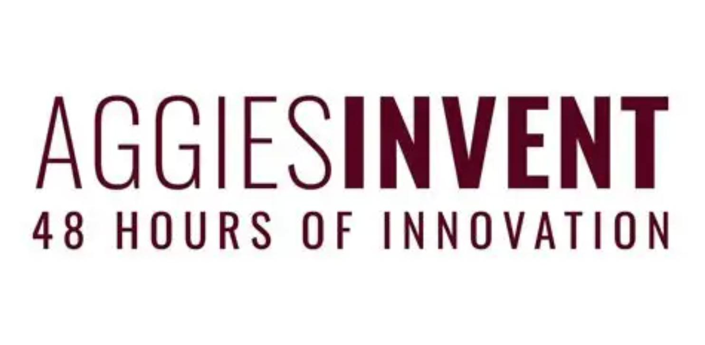

Unexploded ordnance (UXO) is a massive, ongoing hazard, over 1 million UXOs have been identified in Ukraine so far, 75 million in Laos since the Vietnam War, and UXOs caused an estimated 6,892 casualties globally in 2019 alone. We need a system to safely identify and physically mark the location of UXOs autonomously in known-mined and hard-to-reach areas.
Existing detection solutions fall short in three ways: they lack versatility, typically carrying only 1–2 sensors; they're inaccurate, with false alarm rates up to 20%; and they're personnel-intensive, requiring one dedicated UXO detection engineer plus up to seven additional people working in harm's way.

Set four core design requirements up front: identify UXOs with a wide sensor suite, physically mark them with a dual-paint system while transmitting coordinates digitally, transmit data to a ground station in real time with a local backup if connection is lost, and operate fully autonomously with no human input.

SkyGuardian added a blended wing to increase range, carries a deployable payload with UXO detection sensors, and stays compact and lightweight while being fundamentally safer than a ground rover, no wheels rolling directly over unstable ground, no risk of accidental triggering from surface contact.

Rather than blindly scanning an entire minefield, SkyGuardian runs a custom algorithm, SkyMap, that takes known UXO locations as input and outputs prioritized zones of interest plus an optimal flight path, so the drone spends its limited flight time on the highest-probability areas first.

Once a UXO is confirmed, a peristaltic-pump paint dispenser, mounted on the lowered payload, marks it directly on the ground. Red paint flags UXOs in the immediate path of civilians or military personnel; neon-orange marks lower-urgency finds. Both are bright, non-sticky, long-lasting, and easily identifiable from a distance.
The U.S. Department of Defense spends roughly $200 million a year on UXO detection alone. At an estimated $25,000 per unit, SkyGuardian can be produced and deployed at a fraction of that cost, while performing the tasks of up to seven personnel and keeping every one of them out of a minefield.
Aggies Invent is Texas A&M's 48-hour intensive engineering design competition, run by the Meloy Engineering Innovation and Entrepreneurship Program. Students self-select into teams, get seeded with a real industry or national-security need statement, and have 48 hours, with mentors and rapid-prototyping access, to research, design, and pitch a working solution to a panel of judges.
This edition was sponsored by Los Alamos National Laboratory, themed "Tech for Peace: UXO and Safe Practices," with roughly 50 students competing for close to $10,000 in prizes and the attention of LANL's own technical recruiters. SkyGuardian, competing as Team Sky Guardians, placed 3rd overall.

The full pitch deck, problem, design requirements, platform comparison, final design, technical specs, and commercial viability, plus a short pitch video walking through SkyGuardian in action.